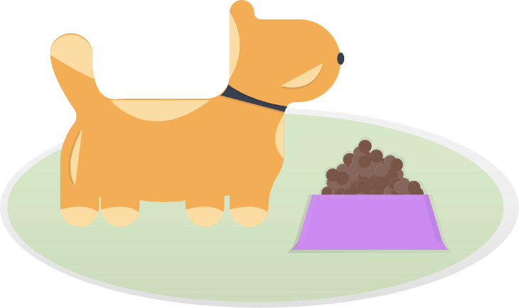

Astro
Course Project
Overview
For an HCI course, I worked with a team for three CSE students to go through the user-centered design process. During the three months of the course, we conducted user research through interviews, ideated and designed from low fidelity to high fidelity, and tested with users and classmates.
Our team designed Astro for dog owners who can be away from home for long periods of time like a full work day or vacations. Astro is a robot companion for dogs and dog owners that allows dog owners to feed, let out, and play with their dogs remotely.
| Role | Lead Researcher and Designer |
|---|---|
| Team | Three CSE Students + Me |
| Project | Dog Monitoring Robot and Companion App |
| Timeline | March - June 2019 |
Problem Space
How can we improve the experience for dog owners who are away from their dogs for extended periods of time?
When dog owners are away, their dogs often need to be left at home. On long work days and business trips, dogs are left at home, unmonitored.
The primary target users of our product are hard-working industry professionals who are away from home for long periods of time and own pets. These users are either often working late or work in an industry that travels frequently. Secondary users include people/families who travel a lot and own pets and would rather leave their pet at home than leaving them in the care of another person.
Research
To begin our project, we conducted user research to discover what problems and pain points dog owners have with their daily lives of taking care of their dogs.
Methods
We conducted semi-structured interviews spanning about two weeks with four dog owners. We learned about their different concerns and found the main concerns dog owners had was worrying about their dogs eating or being let out when the owners were away.
Findings
Dog owners worry about their dogs when away even with care taking systems
Positive Elements
- Most of our participants have a care taking system in place where the dogs are usually not left alone for longer than a couple of hours.
- Most of our participants have a care taking system in place where the dogs are usually not left alone for longer than a couple of hours.
- All of our participants either use some method of direct or indirect observation.
Pain Points
- All of our participants worry about their dogs when they are away and do not necessarily feel comfortable with their existing care taking systems.
- All of our participants worry about their eating habits and outdoor activity when away.
- Most of our participants avoid traveling to not leave their dogs in the care of someone else.
- All of our participants desired more interaction between the dogs and themselves even when away at work or traveling.
Task Analysis
Moving forward with our research, we conducted a thematic analysis of our interview transcripts. From our thematic analysis, we identified 6 salient tasks that dog owners engaged in.
Primary Tasks
- Feeding Dogs
- Letting Dogs In and Out
- Monitoring Dogs
- Maintaining the Health of Dogs
Brainstorm
With the four tasks of feeding, letting dogs in or out, monitoring dogs, and maintaining the health of dogs in mind. We brainstormed different products to address these tasks. Our three main ideas were a robot, smart collar, and smart crate.
Competitive Analysis
Our team also looked at various existing dog care products such as Furbo, smart collars, and smart crates. We found that at most, the products only accomplished two of the tasks we defined. For example, Furbo allows users to feed their dogs and monitor them, but can't really let their dogs out or maintain their health.
Our Solution
Astro is a robot companion for dogs and dog owners that allows dog owners to feed, let out, and play with their dogs remotely.
Our solution is a robot that is able to accomplish the sorts of tasks necessary to properly care for a dog left at home by itself. The robot has to be able to locate and open doors, recognize and monitor the dog, locate toys and use them to play with the dog, locate food dishes and dispense food into them.
Users will interact with the robot through a mobile application. The app allows the user to program the robot, schedule events while they are away from home. These tasks can be done autonomously by the robot, and controll the robot manually
Prototyping
With our design concept in mind, we set out to create low-fidelity prototypes to test and flesh out our concept. Because of the time constraints of this project, our team mainly focused on creating the mobile app companion for the robot.
Robot Prototype
Our team did not prioritize prototyping the robot, because we already “have” an existing prototype and model existing with Boston Dynamic’s SpotMini.
Mobile App Prototype
Users will interact with the robot through a mobile application. The app allows the user to program the robot, schedule events while they are away from home. These tasks can be done autonomously by the robot, and controll the robot manually